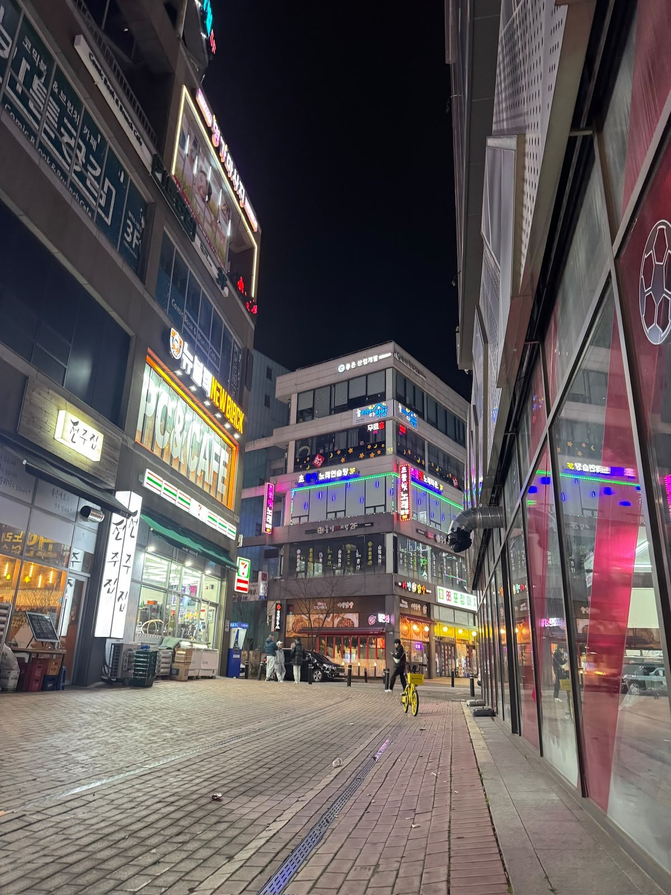

Conocer el mundo desde distintas miradas
He tenido la oportunidad de viajar a Estados Unidos, Tailandia y Corea del Sur. Cada destino forma parte de mis experiencias personales y de mi interés por descubrir lugares y culturas diferentes.
Viajar me gusta porque me permite salir de lo cotidiano, observar otros estilos de vida y encontrar nuevas perspectivas.




Curiosidad que no se detiene
Así como me llama la atención entender cómo funciona una tecnología, también disfruto explorar la diversidad de las ciudades, las costumbres y las personas.
Los viajes alimentan esa curiosidad y me motivan a seguir aprendiendo tanto dentro como fuera del ámbito académico.
Muchos lugares por descubrir
Quiero continuar sumando experiencias y conocer nuevos destinos en el futuro. Viajar es una manera de conectar mis intereses personales con una visión más amplia del mundo.
Cada recorrido es parte de la historia que sigo construyendo.